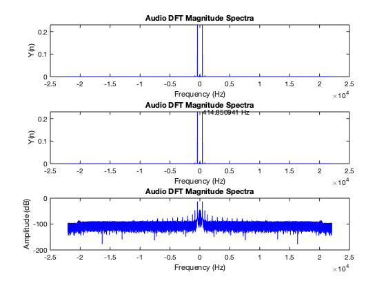
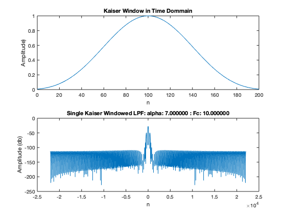
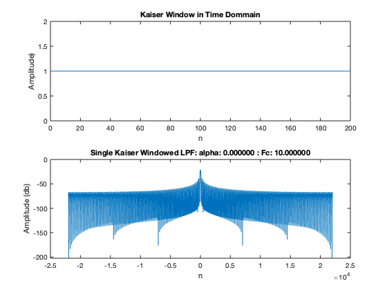
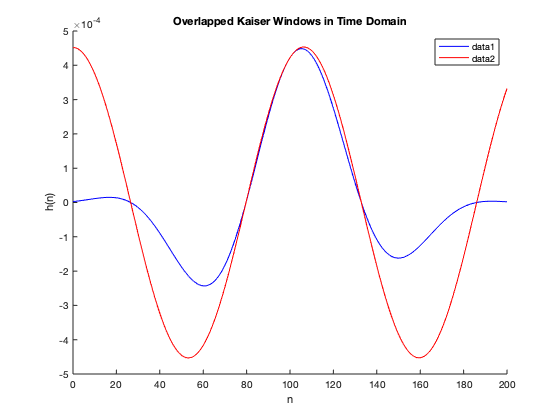
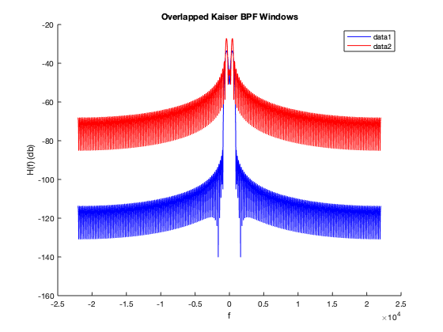
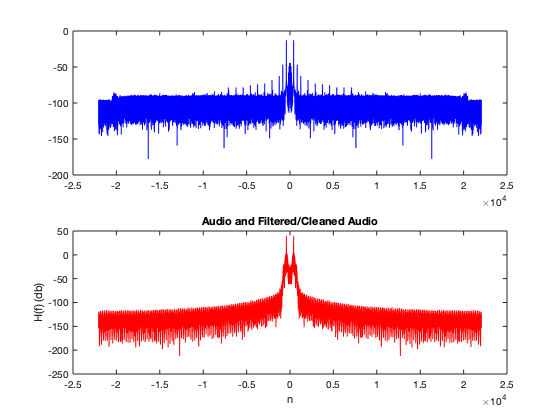

Contents
% This matlab script will capture a specified amount of audio (time) and % store that audio in a file within the Audio Files folder. If a file with % the specified filename already exists, it will prompt the user for % another filename. Next, this script will analyse the audio, plotting the % audio in the time and frequency domain. The script then adds % noise to the audio file, and filters that noise using two kaiser windowed % low pass filters. Two filters are used so that two Kaiser windows of % different shape can be applied to the filters, hence improving the % quality of the filter. Next, the two kaiser windows are plotted, % overlapped in the time and frequency domain, so that we may better % visualize them. Additionally, plots of regular audio, and filtered audio % are plotted together.
Initialize Workspace
clc; clear; close all; filename = 'Audio Files/tuning_fork.wav'; % Create Audio File % Uncomment 'filename' if you need to record audio. ID = -1; % Set the device (-1 is default audio device) time = 3; % Sets the length of time the audioCapture will run. %filename = audioCapture(time,filename,ID); % Read Audio file audio = audioread(filename); info = audioinfo(filename); % Variable Declaration M = 100; % Filter Order alphaH = 7; % Alpha shape parameter of Kaiser window alphaL = 0; % Alpha shape parameter of Kaiser window Fc = 10; % Cut-off frequency for LPF % Variable Calculations N = info.TotalSamples; % Number of samples Fs = info.SampleRate; % Sample Rate
Analyze Audio
% Data preparation % Create x-axis for frequency plots. frequency=linspace(-Fs/2,Fs/2,N)'; % Take the DFT of the audio files, absolute value, and shift for symmetry audio_FT = (fftshift(abs(fft(audio/max(audio)))))/N; % Convert to decibles audio_FT_db = mag2db(audio_FT); % Find the max value of the [max_value_FT, max_index_FT] = max(audio_FT); fund_freq = abs(frequency(max_index_FT)); % Fundamental Frequency of Tuning Fork % Audio DFT Magnitude Spectra plot % Time domain plot figure subplot(3,1,1); plot(frequency, audio_FT,'b'); xlabel('Frequency (Hz)'); ylabel('Y(n)'); title('Audio DFT Magnitude Spectra') % Frequency Domain Plot subplot(3,1,2); plot(frequency, audio_FT,'b'); xlabel('Frequency (Hz)'); ylabel('Y(n)'); title('Audio DFT Magnitude Spectra') text(fund_freq ,max_value_FT, sprintf('%f Hz', fund_freq)) % Frequency Domain plot in dB subplot(3,1,3); plot(frequency, audio_FT_db,'b'); xlabel('Frequency (Hz)'); ylabel('Amplitude (dB)'); title('Audio DFT Magnitude Spectra'); % From the above plot, we can see that our frequency is calculated as % 415.8509 Hz. This is 0.4491 Hz away from the 415.3 Hz that is stamped % on the tuning fork. We can express this as a percentage: 0.4491/415.3 % = 0.1081% away from the stamped frequency.
Noisy Tuning Fork (BONUS)
%Adding Random Numbers to audio noisy_audio = audio / max(audio) + randn(N,1); % Take the DTFT of the audio files, absolute value, and shift for symmetry noisy_audio_FT = (fftshift(abs(fft(noisy_audio))))/N; % Find Fundamental Frequency [max_value_noisy_FT, max_index_noisy_FT] = max(noisy_audio_FT); F_max = abs(frequency(max_index_noisy_FT)); % Fundamental Frequency of Tuning Fork % Create BPF with Kaiser Window LPF by multipying by e in time domain. [kaiser_LPF1, n1] = kaiserLPF(alphaH,Fs,Fc,F_max,M,N); [kaiser_LPF2, n2] = kaiserLPF(alphaL,Fs,Fc,F_max,M,N); % Shited Kaiser IR to create a Bandpass filter. kaiser_BPF1 = real(kaiser_LPF1.*exp(j*2*pi*(F_max/Fs)*n1)); kaiser_BPF2 = real(kaiser_LPF2.*exp(j*2*pi*(F_max/Fs)*n2)); % DFT of the Kaiser BPF kaiser_BPF1_FT = abs(fftshift(fft(kaiser_BPF1,N))); kaiser_BPF2_FT = abs(fftshift(fft(kaiser_BPF2,N))); % All windows within kaiser_array will be applied to the audio signal kaiser_array = [kaiser_BPF1,kaiser_BPF2]; % Pass kaiser array to my filter function filtered_audio = myFilter(kaiser_array, noisy_audio); % DFT of Clean Audio filtered_audio_FT = fftshift(abs(fft(filtered_audio))); 
Final plots
Overlaped Kaiser Windowed BPF's Time Domain
figure
hold on
plot(n1, real(kaiser_BPF1),'b')
plot(n2, real(kaiser_BPF2),'r')
title('Overlapped Kaiser Windows in Time Domain')
xlabel('n'); ylabel('h(n)'), legend
hold off
% Frequency Domain
figure
hold on
plot(frequency, mag2db(kaiser_BPF1_FT), 'b')
plot(frequency, mag2db(kaiser_BPF2_FT), 'r')
title('Overlapped Kaiser BPF Windows')
xlabel('f'); ylabel('H(f) (db)'), legend
hold off
% Audio vs Filtered Audio
figure
hold on
subplot(2,1,1)
plot(frequency, mag2db(audio_FT),'b')
subplot(2,1,2)
plot(frequency, mag2db(filtered_audio_FT),'r')
title('Audio and Filtered/Cleaned Audio')
xlabel('n'); ylabel('H(f) (db)')
hold off
   Voice Pitch
%Create/Read the voice file myVoiceFile = 'Audio Files/myVoiceFile.wav'; %myVoiceFile = audioCapture(time,myVoiceFile,ID); % Read Audio file myVoice = audioread(myVoiceFile); info = audioinfo(myVoiceFile);
Audio Out files.
time = N/Fs;
play = 0;
if (play == 1)
disp('Playing: Audio')
soundsc(audio, Fs);
pause(time);
end
audiowrite('Audio Files/Noisy_Audio.wav',noisy_audio,Fs)
if (play == 1)
disp('Playing: noisy_audio')
soundsc(noisy_audio, Fs);
pause(time);
end
audiowrite('Audio Files/Filtered_Audio.wav',filtered_audio,Fs)
if (play == 1)
disp('Playing: filtered_audio')
soundsc(filtered_audio, Fs);
end
Warning: Data clipped when writing file.